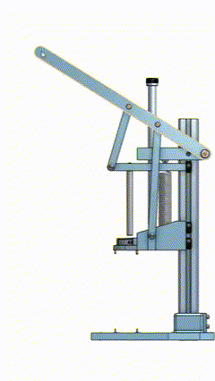

Gaggiuino and Topology Optimization
This is my solution to a take-home challenge for a company. This mechanism brings two halves of a device together while making sure that they are concentrically aligned. Once the halves of the device are brought together, a worker can easily fasten the two halves together.
The main reason for this design is that I wanted to make a mechanism that can allow a worker to easily bring the two halves of the device together while making sure that the device's halves don't become misaligned (this is a major issue as the two halves are attracted to each other) and be able to do this quickly. The assembly mechanism aligns the two halves of the device with the three pins on the base and on the main slider. The secondary slider has a shaft that goes through both halves of the device, aligning the two. This shaft also makes sure that the top half of the mechanism doesn't get attracted to the bottom half, misaligning the two.
When the lever is pulled, the top half and the bottom half of the device get brought together. At the same time the shaft, on the secondary slider, gets pushed through the top half of the device, making sure the top is aligned. When the lever is close to the bottom of its travel but before the two halves of the device are brought together, the shaft will be aligning the bottom half with the top half. See the GIF below to see how the mechanism functions.
The components are all designed to be 3D printed, and assembled with common hardware. The design is centered around an 8020 extrusion, using V-slot wheels to allow the sliders to move. The main slider has a captive metal part to help hold the top device to the slider. The sliders are kept aligned to only vertical motion by the wheels, the linkages, and the bolt in the middle. A spring is attached to the main slider to aid in resetting the motion of the mechanism. The final feature is that the base of the mechanism has three holes in it, two in the front and one in the back, to allow for the base to be fastened to a table to help secure it more.
Place the bottom half of the device on the base of the assembly mechanism, aligning it with the three holes. Attach the top half of the device on the main slider, aligning it with the three pins and closing the latch on the clamping shaft collar. Pull the lever to bring the two halves together. If the lever does not move with a smooth action, make sure the aligning shaft is aligned with the top of the device. Once the two halves are together, fasten them together and unclamp the collar. Release the lever and your device is assembled.
Note: This design was created using Onshape
Gaggiuino and Topology Optimization

Refitting the IVSG Mapping Van

Forged Carbon Fiber Shift Knob
Serious collaboration or work inquiries only.